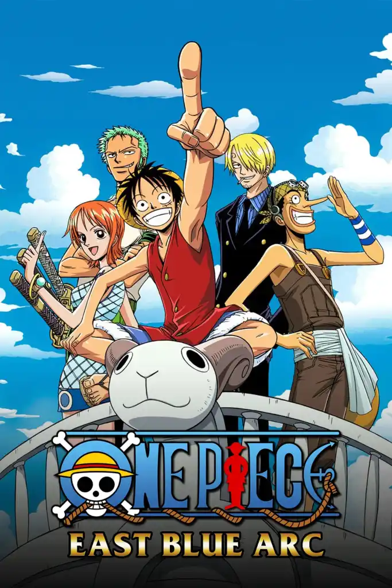
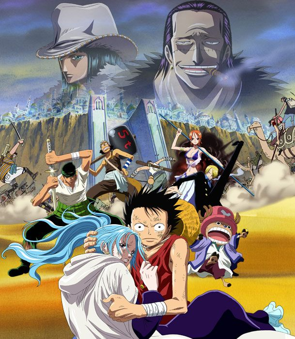
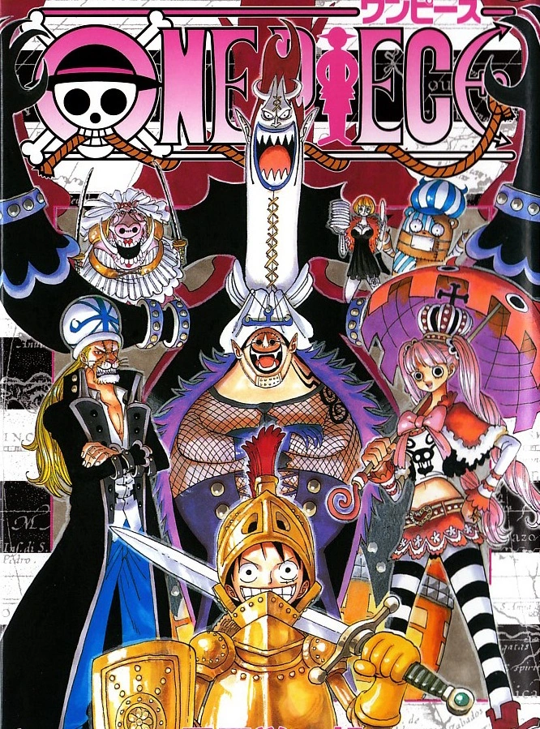
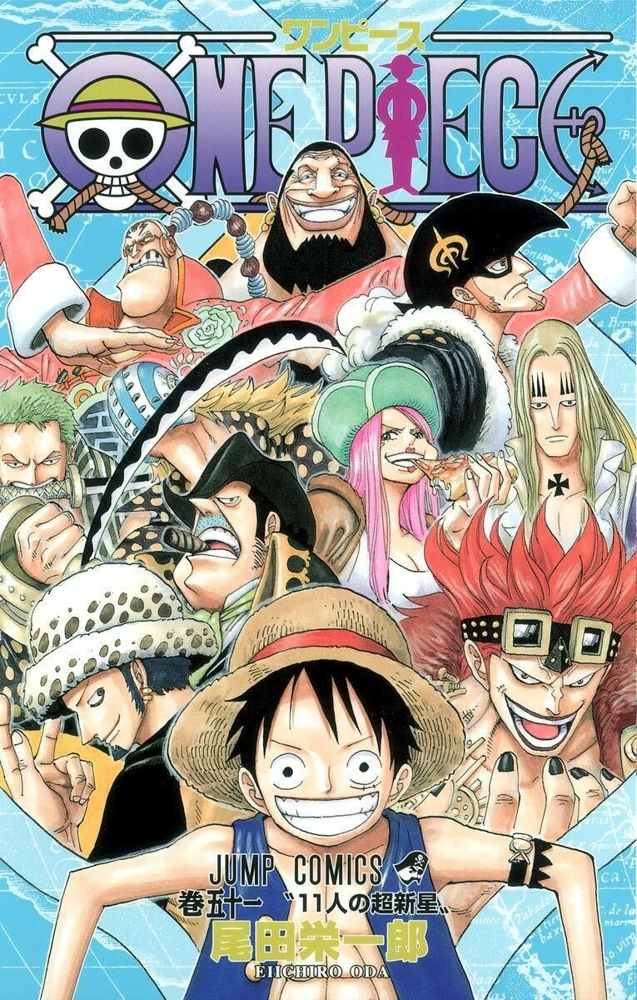
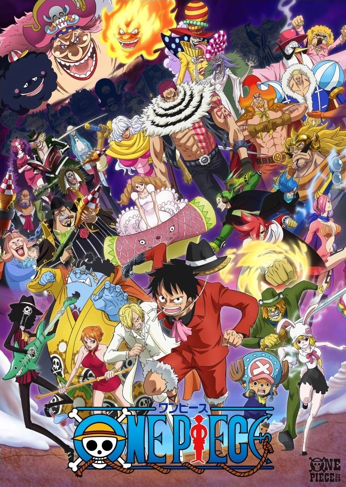
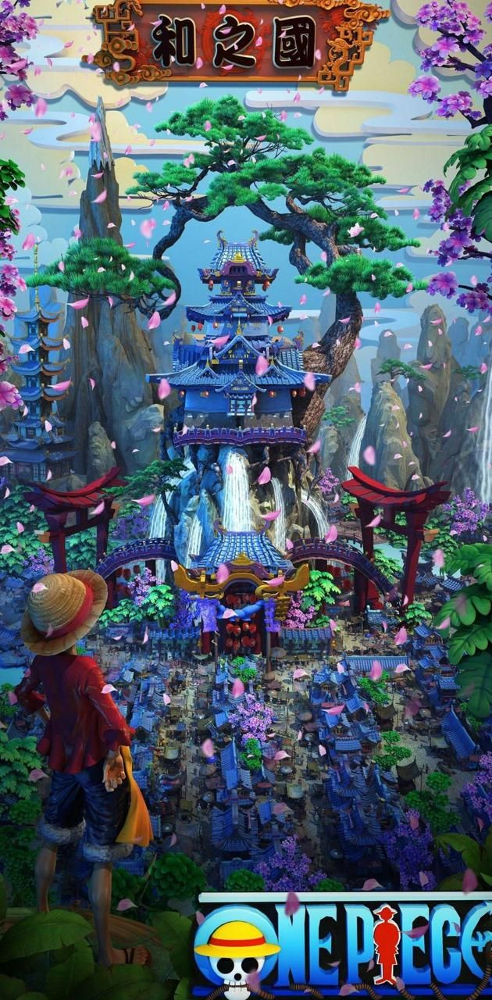

Arc de East Blue
Le premier arc de One Piece où Monkey D. Luffy et son équipage se forment en rassemblant les membres principaux du groupe. Il couvre l'introduction des personnages clés et leur départ vers la grande mer.
- Romance Dawn
- Arc de l'île de Luffy
- Arc de Syrup Village
- Arc de Baratie
- Arc d'Arlong Park
- Arc de Loguetown
Arc de Alabasta
Dans cet arc, l'équipage de Luffy se rend sur l'île d'Alabasta pour aider la princesse Vivi à sauver son royaume d'une guerre civile provoquée par Crocodile.
- Introduction à Alabasta
- Arc de Rainbase
- Battle of Alabasta
Arc de Skypiea

Dans cet arc, Luffy et son équipage voyagent vers le ciel, où ils rencontrent des habitants de Skypiea et combattent le dieu Enel.
- Arrivée à Skypiea
- Conflit contre Enel
- La grande bataille des îles célestes
Arc de Thriller Bark
L'équipage rencontre un ancien pirate, Gecko Moria, qui possède une île où il collecte des âmes et utilise des zombies.
- Rencontre avec Gecko Moria
- Combat contre les zombies
- Affrontement contre Moria
Arc de Sabaody Archipelago
Luffy et son équipage arrivent à Sabaody, où ils rencontrent d'autres pirates et des nobles du monde, et se retrouvent impliqués dans des événements qui bouleverseront leur aventure.
- Rencontre avec les Supernovas
- L'attaque des Pacifistas
- Le départ de l'équipage
Arc de Marineford

Luffy tente de sauver son frère Ace à Marineford, une bataille épique entre la marine et les pirates, marquant un tournant majeur dans l'histoire.
- La guerre de Marineford
- Le sacrifice d'Ace
- La bataille contre les amiraux
Arc de Dressrosa

Luffy et son équipe se rendent à Dressrosa pour affronter Doflamingo, un des Shichibukai, et libérer l'île d'une tyrannie.
- Conflit contre Doflamingo
- La bataille pour libérer Dressrosa
Arc de Whole Cake Island
Dans cet arc, Luffy et ses compagnons partent à la recherche de Sanji, qui a été enlevé par Big Mom, une des quatre empereurs.
- Enlèvement de Sanji
- Conflit contre Big Mom
Arc de Wano
Actuellement en cours, l'arc de Wano voit l'équipage de Luffy se rendre sur l'île de Wano pour libérer le pays de la tyrannie de Kaido, l'un des Empereurs des mers.
- Conflit contre Kaido
- Rébellion de Wano
- Bataille de l'Onigashima